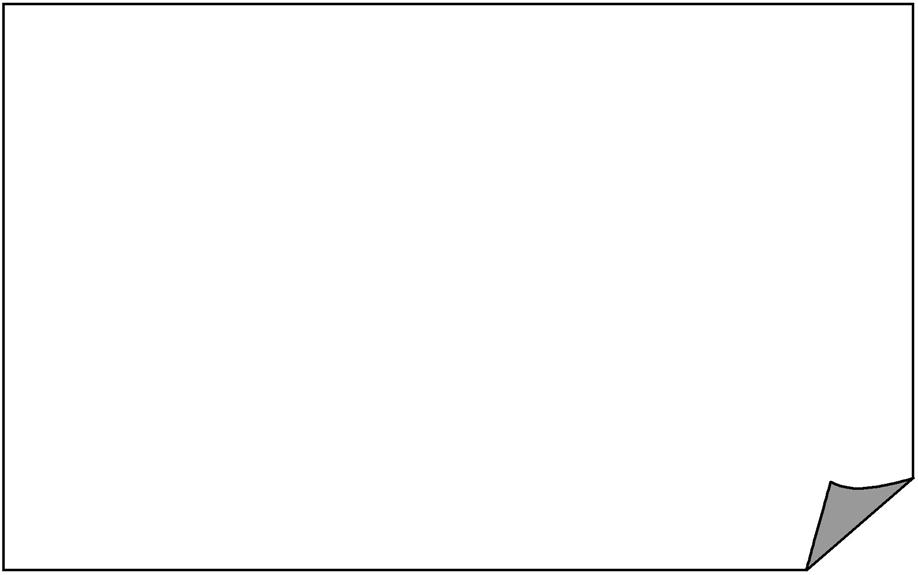

27-2014湖南，A

Want to improve your writing skills? New Writing South is directing the way!
●Towner Writer Squad(班组)for kids aged 13—17
Led by comedy and TV writer, Marian Kilpatrick, Towner Writer Squad will meet once a month at the contemporary art museum for 11 months, starting 12 October,2014.
The FREE squad sessions will include introductions to a wide range of writing styles, from poetry to play writing and lyrics(抒情诗)to flash fiction, to support the development of young writers.
Application & Selection
If you would like to apply to be part of the Towner Writer Squad, please send a sample piece of your writing (about 500 words), responding to the title‘LUNCH,’ with your name, age, address and e-mail address to:debo@newwritingsouth.com.
Once all applications are in, you will be invited to an open selection event on 17 September, 4—5pm, at the gallery of Towner. This will be an informal opportunity to meet the Squad Leader, Squad Associate and other young people.
You will also have a chance to get to know the fantastic gallery space and get a taste of what's to come.
Deadline for applications:8 September,2014
For further information go to:facebook.com/towner or towner.org.uk or newwritingsouth.com
Any questions—feel free to send your e-mail to Towner Writer Squad Associate:wharne@towner.gov.uk
※ ※ ※ ※ ※ ※ ※ ※
●Beginner Writing Project for kids aged 10—13
Due to popular demand,a writing project will be started for eager beginners.
Start time:6 September,2014
Meet every other Saturday,2—4pm,at the Towner Study Centre.
Study and write at your own pace—you do not have to rush—as you have a year to go through the project. Practise under the guidance of some experienced writers and teachers who can help you with basic writing skills.Most importantly,build confidence and have fun while writing!
No previous experience or special background is required. Many others have been successful this way.If they can do it,why can't you?
Fee:￡179
For more information go to:newtowner.org.uk or generate.org.uk
全部题目与逐题讲解
- A.to train comedy and TV writers
- B.to explore the fantastic gallery space
- C.to introduce a contemporary art museum
- D.to promote the development of young writers
查看答案与讲解
答案：D
1.D 细节理解题。根据题干中的Towner Writer Squad可知本题答案区间为第一则广告。根据第一则广告中第二段中的“to support the development of young writers”可知本题选择D项。选项中的promote与原文中的support相对应。
- A.provide a piece of their writing
- B.meet the Writer Squad Leader
- C.offer their family information
- D.complete an application form
查看答案与讲解
答案：A
2.A 细节理解题。根据“Application & Selection”中的第一段“If you would like to apply to be part of the Towner Writer Squad,please send a sample piece of your writing...”可知本题选择A项。
- A.6 September,2014
- B.8 September,2014
- C.17 September,2014
- D.12 October,2014
查看答案与讲解
答案：B
3.B 细节理解题。提问的是用邮件发申请信的时间不要晚于哪一天。根据第一则广告中“Deadline for applications:8 September,2014”可知,应选择B项。题干中的no later than与deadline相对应。
- A.Practising as much as possible.
- B.Gaining confidence and having fun.
- C.Studying and writing at their own pace.
- D.Learning skills from writers and teachers.
查看答案与讲解
答案：B
4.B 细节理解题。根据第二则广告中“Start time:6 September,2014”下面第二段的最后一句话“Most importantly,build confidence and have fun while writing!”可知本题选择B项。题干中的most important与原文中的Most importantly相对应。
- A.facebook.com/towner
- B.newwritingsouth.com
- C.newtowner.org.uk
- D.towner.org.uk
查看答案与讲解
答案：C
5.C 细节理解题。根据第二则广告最后一句“For more information go to:newtowner.org.uk or generate.org.uk”可知本题选择C项。 高级词块 ①session 一场,一节 ②flash fiction微型小说
本篇暂无未重复外刊。